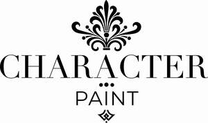

Trade Mark Journal No.2025/027 4 July 2025
UK00004221214 19 June 2025 (2)

- Class 2
- Interior paint; Paint; Decorating paints; Exterior paint; House paint; Paint for use in the manufacture of furniture; Paint products [other than paint boxes for use in school]; Interior paints; Interior decorative finish coatings [paints]; Acrylic decorative coatings [in the nature of paint]; Wall coatings [paint]; Paint [other than insulating or paint boxes for use in school]; Decorative coatings in the nature of paint; Spray paint; Enamels in the nature of house paint; Stains as paint; Exterior paints; Paint for artists; Paint preparations; Decorating materials in the nature of paints; Varnish for the decoration of wood; Water based acrylic paints for use in house painting; Paints for use in the manufacture of furniture; Paint powders; Interior protective finish coatings [paints]; Paint sealers; Paint primers; Varnish paints; Paint additives in the nature of tinting colours; Textured wall coatings [paints]; Lime wash paint; Surface coatings in the nature of paint for the decoration of structures; Acrylic paints; Powders of precious metals for use in painting, decorating, printing and art; Acrylic protective coatings [in the nature of paint]; Coatings in the nature of paint for use on wood; Metal in foil and powder form for use in painting, decorating, printing and art; Materials for the protection of wood [paint]; Paints (Enamel -); Enamel paints; Wood coatings [paints]; Coatings for wood as paints; Architectural paints; Waterproofing preparations [paint]; Industrial coatings in the nature of paint.
CHARACTER PAINT COMPANY LIMITED